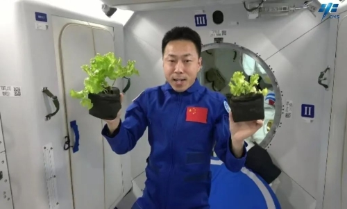
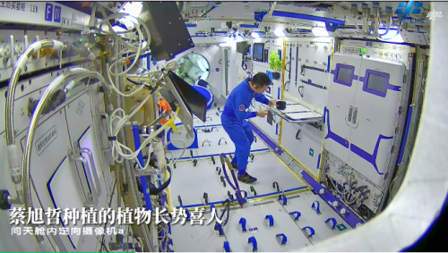
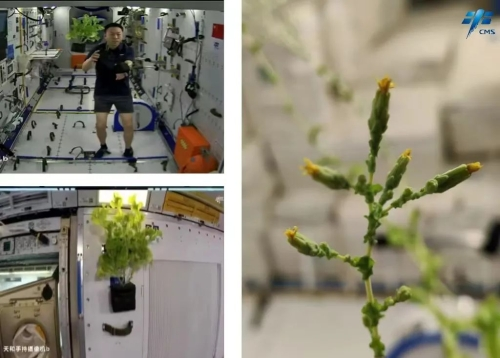

春种 | “太空种菜”有什么不一样？
发布日期: 2023-04-06
春天，万物初萌、生机勃勃，那一抹绿象征着希望和未来。你知道吗？“种菜”不仅仅是在田间巷陌，也曾出现在“天宫二号”
，到了神舟十四号任务期间，航天员在“太空之家”种植的生菜还丰富了航天员的在轨食谱。太空种植植物有何难点？航天员又是如何浇水施肥的呢？今天我们一同了解。

航天员蔡
旭哲同地面人员分享生菜生长情况
一、太空种植植物的目的
太空种植植物，主要有以下三个目的：
一是利用空间实验室平台，研究太空微重力等特殊环境对植物生长发育、生理生化等方面的影响。
二是为航天员提供食物、氧气和水。植物可通过光合作用吸收航天员产生的二氧化碳，生产氧气，可一定程度上净化密闭舱室环境，获得清新的空气；生产食物，为航天员提供新鲜蔬菜水果，补充维生素和膳食纤维，丰富航天员食谱；此外，通过植物的蒸腾作用，还可实现密闭系统内水的净化，为航天员补充纯净的水。植物的这种生产功能对建立自给自足、高物质闭合度的地外生命保障系统具有非常重要的作用，可大大降低长期载人飞行任务的后勤物资供应成本，科研人员已开展以植物为核心部件的地外生命保障系统研究工作。
三是植物可为航天员提供绿色鲜活的环境，通过照料植物可以缓解航天员压力，正向调节航天员心理情绪。

航天员蔡旭哲给植物浇水
二、太空“种菜”有何难点
太空微重力环境下种植植物有何难点？在神舟十四号航天员乘组返回75天后首次公开亮相的记者见面会上，航天员蔡旭哲就曾和大家分享在太空培育蔬菜与地面培育的不同：“我觉得最大的不
一样就是浇水比较困难，在失重环境下，水停留在根系表面，不容易深入植物根层。”
我们知道，植物正常生长必须具备适宜的光照、水分、养分（土壤）、温度和空气（气体）等环境条件。太空微重力环境下，水分养分传导和气体交换等特性与地面1G重力环境不一样。太空微重力环境会造成在植物根系周围形成一个边界层，水/气无法自动分离，植物必须依赖外力才能与周围环境进行正常物质交换。如果植物根部水分运动控制不好，极易造成根部水分过多而根系缺氧，或者水分过少而根系缺水。太空微重力条件下的水分供应是否
合理将直接影响植物生长介质中的水分、氧气分布情况，进而影响到植物根系水分吸收和根系呼吸，也会影响矿质养分的流动与供给，最终影响到植物的正常生长。因此，微重力条件下的水分养分供给技术是空间植物栽培的关键。
